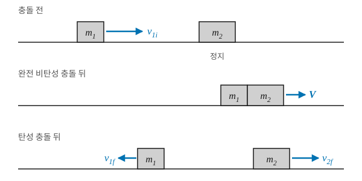

← 목차
1차원 충돌 (collisions in one dimension)
닫힌 고립계에서는 충돌 전과 뒤의 선운동량 합이 같다. 정지한 물체 2에 물체 1이 부딪히는 경우를 본다.
(9.6.2)
완전 비탄성 충돌 (completely inelastic collision)
은 두 물체가 붙어
(9.6.4)로 움직이고 운동에너지는 보존되지 않는다.
탄성 충돌 (elastic collision)
은 운동에너지도 보존되어
,
(9.7.6, 9.7.7)이다. 질량이 같으면 두 물체가 속도를 맞바꾼다.
